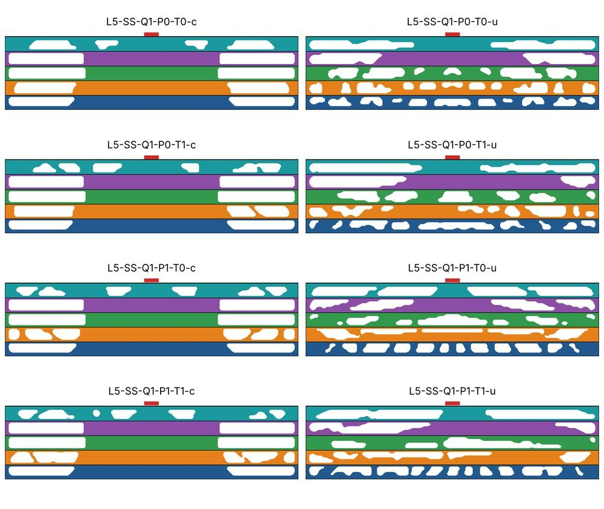
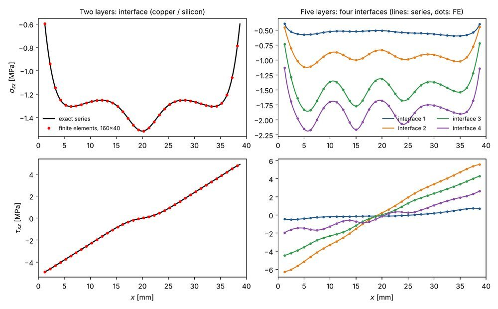

Topology optimization of a five-layer stack under load and heat
Problem
Layered stacks of aluminium, aluminium nitride, copper, solder and silicon warp when heated, and the layout of material in each layer sets both the warpage and the path the heat takes.
ApproachI wrote a density-based optimizer in which every layer has its own material layout. It couples heat conduction and convection with thermo-elasticity, and uses adjoint sensitivities, a custom method of moving asymptotes solver and a connectivity constraint that keeps material attached to the solid skins and supports. The forward model was benchmarked against an exact series solution.
Result- Designs that minimize deflection cut the largest deflection to between 0.037 and 0.167 of the solid case and keep compliance at 0.74 to 0.98 of it.
- Stress is not constrained yet, so the maximum von Mises stress rises to 1.02 to 2.13 times the solid case. Not yet submitted.

